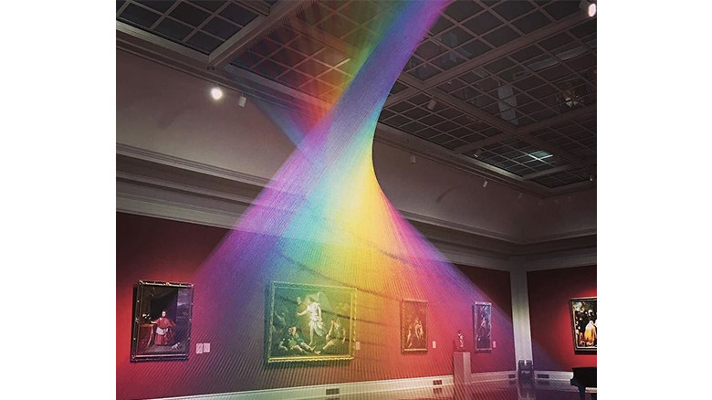

minimal

Gabriel Dawe
http://www.gabrieldawe.com/-どんな人
カナダのアーティストです。色のついた糸を張って虹のようなインスタレーション作品を多く作っています。
-解説
全てまっすぐに張られた糸の集合でできています。 直線の始点と終点の位置をねじって動かして連続させると綺麗な曲面を作りますが、この作品はその性質を利用しています。また、虹が室内にあるように見えるのも面白ポイントです。なぜこの写真のように虹っぽい表現が可能になるかというと、糸同士に微妙な隙間を空けているからです。糸にやや隙間をもたせて密集させることで、写真のような微細な空気感を表現することができるそうです。糸同士が離れすぎるとスカスカだし、近すぎると空気感が薄れてしまう。そんな神的バランスで成り立っているのがこの作品の凄いところです。
-好きなところ
線の角度を微妙に変えながら隙間を意識して密集させるとぼやーとした空気感のある表現が可能なので、やわらかい雰囲気のデザインを作る時に参考になるのではないでしょうか。